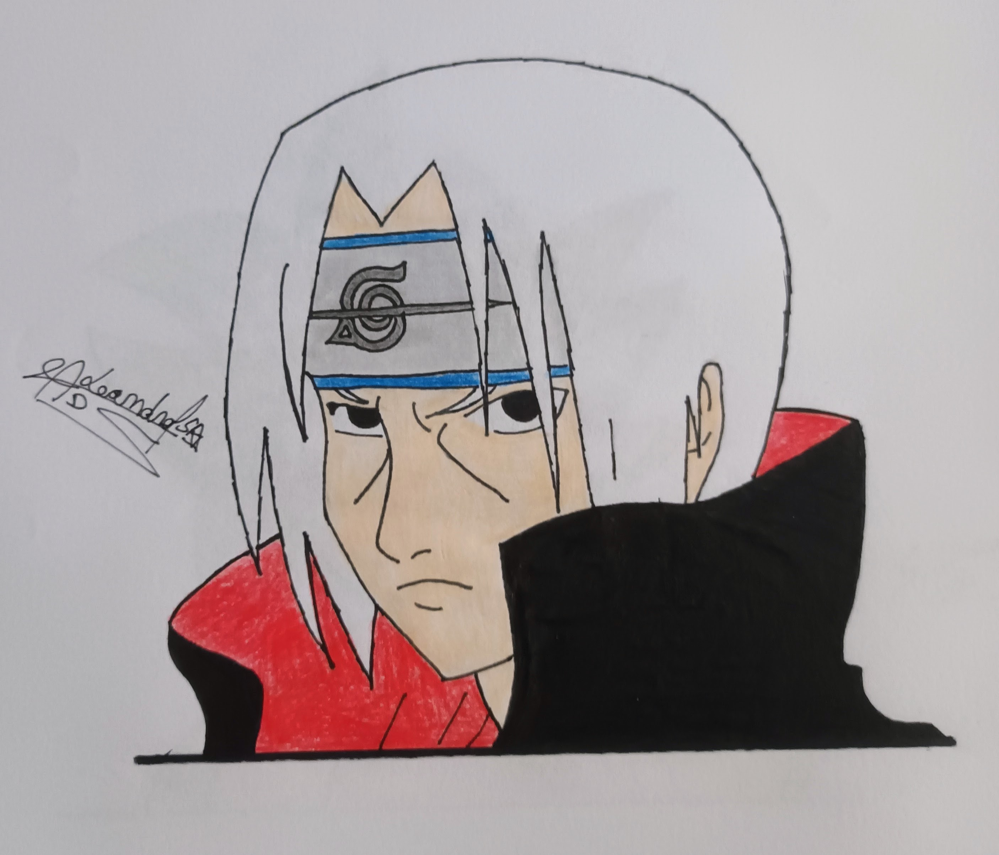
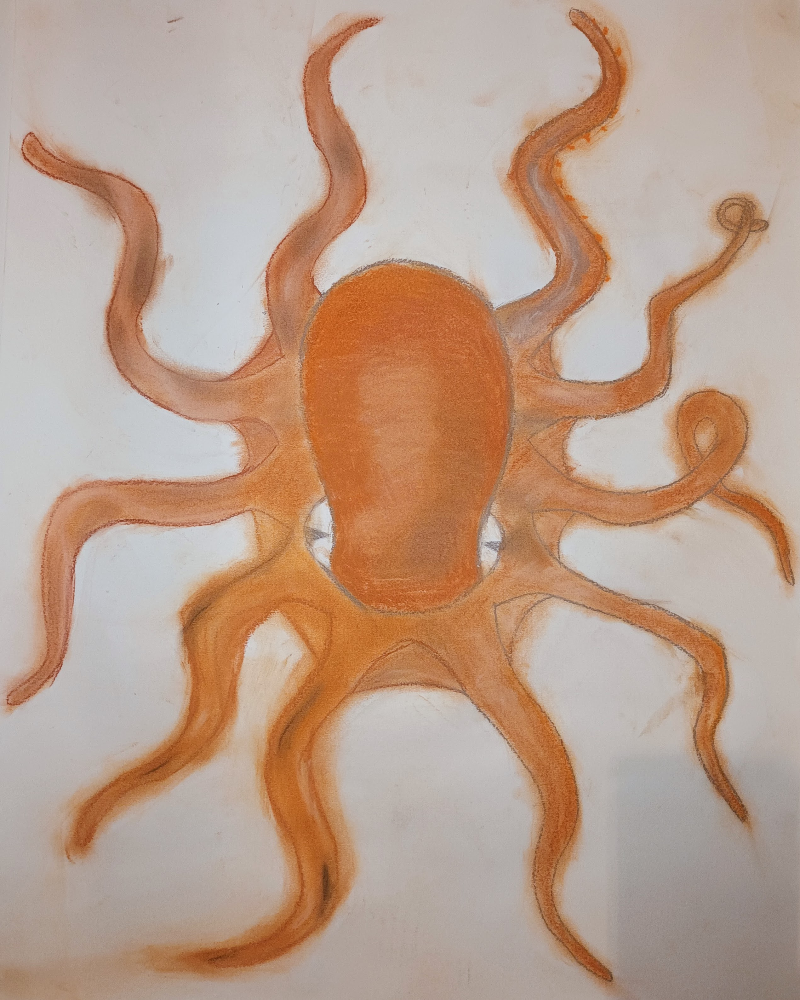
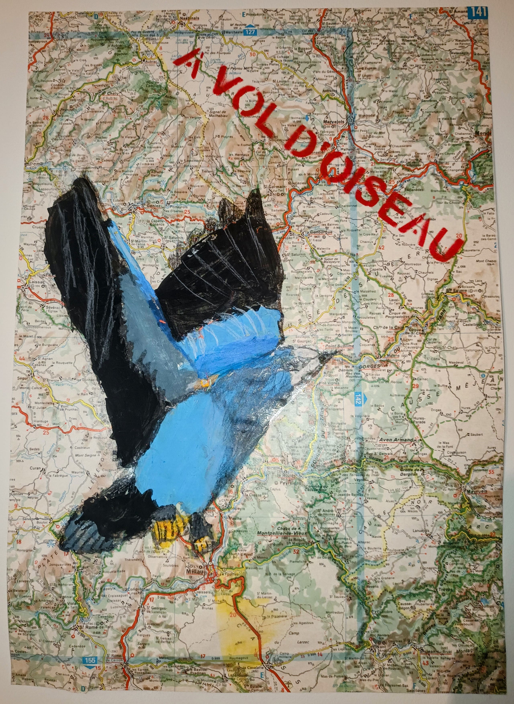
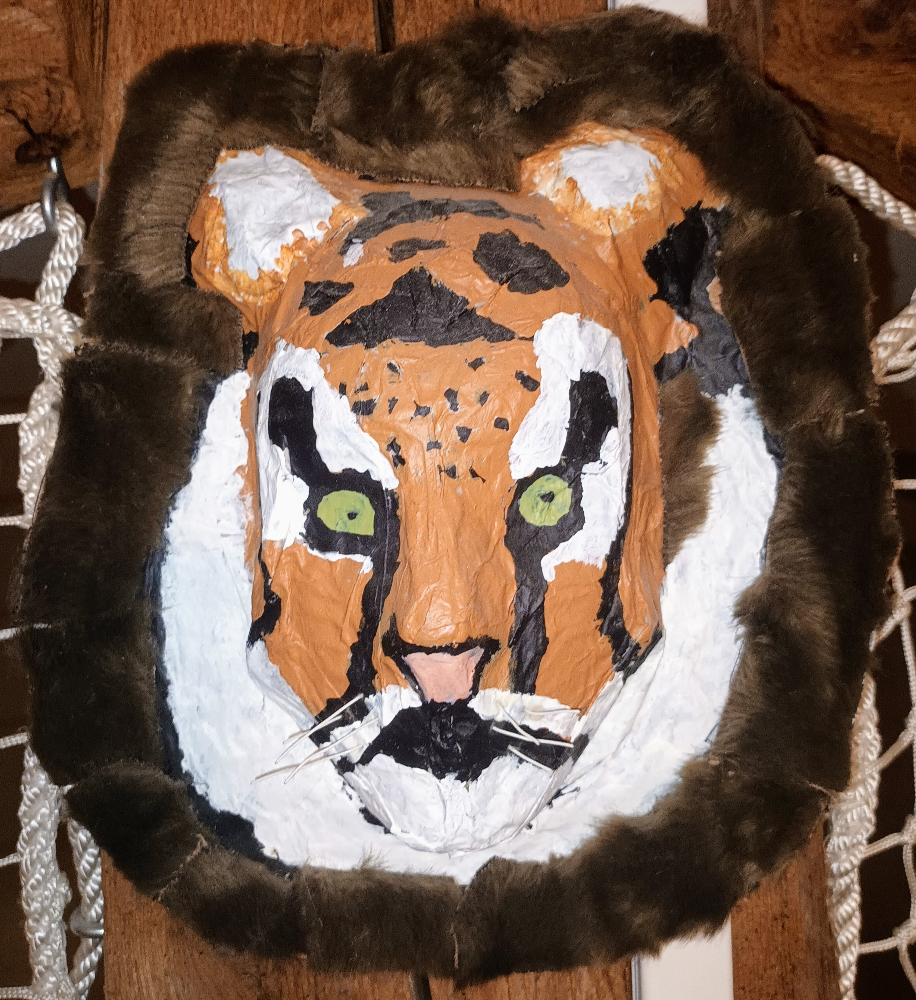
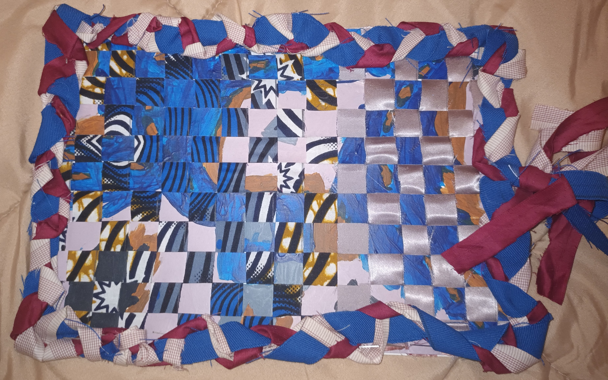

PROJET
Le mapping réalisé pour l'exposition :
Nous étions plusieurs anciens élèves sur le mapping. Moi, je me suis occupé de faire le mapping sur les statues dans le hall du musée. Pour réalisé ce mapping, nous avons utilisé le logiciel Millumin 4.


Divers projets personnels :
Voici un dessous de table réalisé en pyrogravure

Voici quelques exemples de dessins que j'ai pu réaliser





Voici un exemple de montage vidéo réalisé sur capcut (attention flash sur la vidéo de droite)
Divers projet réalisée lors des cours d'arts plastique :



